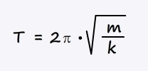
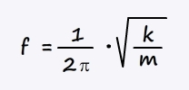
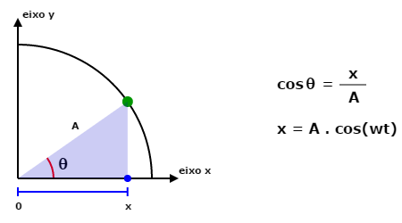

Em nossa prática de laboratório vimos que o período de oscilação de um sistema massa-mola depende apenas da constante elástica da mola e da massa pendular (não dependendo da amplitude do movimento oscilatório).
Fazendo uma análise dimensional da relação entre as grandezas período(s), constante elástica (kg/s2) e massa (kg), e testando valores numéricos obtidos por meio de experimentos, chegamos na seguinte expressão matemática para o cálculo do período de um oscilador massa-mola:
Consequentemente, a frequência desse sistema é:
O vídeo abaixo a dedução algébrica da expressão para o cálculo do período de um sistema massa-mola:
Chamamos essa frequência de frequência natural do sistema massa-mola. Contudo, todo sistema passível de oscilar possui um valor de frequência natural. Esse valor depende de um conjunto de condições particulares do próprio sistema. E esse sistema pode ser um corpo preso a uma mola, ou um edifício...
Segundo esse site: o "Sears tower, em Chicago, com 520m de altura, oscila com amplitude próxima de 1m. Essas oscilações se tornaram incômodos tão grandes, que levaram os engenheiros modernos a criarem amortecedores de oscilações".
O vídeo abaixo mostra dois prédios oscilando com amplitude visível, devido a um terremoto.
Na simulação da aula 01 usamos apenas a segunda lei de Newton para implementar os cálculos na programação. Mas existe uma expressão matemática mais adequada para descrever um MHS. Essa expressão é deduzida através da análise da projeção de um ponto que executa um Movimento Circular Uniforme. Mas qual a relação entre um MSH e um MCU? Analise a animação abaixo e descubra!
Que tipo de movimento apresenta as projeções do ponto em MCU? Tanto o ponto azul, como o ponto vermelho, oscilam em torno de uma posição de equilíbrio, em MHS! Logo, se sabemos descrever matematicamente o movimento do ponto em MCU em função do tempo, então podemos também descrever matematicamente a posição de suas projeções em função do tempo.
Considere que o ponto verde está em MCU, com velocidade angular constante w, partindo de um ângulo inicial de 0 rad, e movendo-se no sentido anti-horário.
• A posição do ponto azul (x) equivale ao tamanho do cateto adjacente do triangulo desenhando. A hipotenusa do triângulo é a amplitude A da oscilação do ponto azul, e tem o mesmo valor que o raio da trajetória do ponto verde).
• O ângulo q mostrado na figura é dado pelo produto entre a velocidade angular (w) e o intervalo de tempo desde o início do movimento (t).
Considerando que o ângulo inicial seja diferente de zero, chamamos o referido ângulo de fase, simbolizado pela letra f, tal que a função da posição de um corpo em MHS, em função do tempo, fica assim:
x = A . cos(w.t + φ)
• Se um sistema massa-mola apresenta frequência constante, poderíamos usa-lo para aferir o tempo, construindo um relógio. Contudo, realmente isso foi feito, mas com um pêndulo. Mas que relação existe entre o movimento de um pêndulo e um MHS?